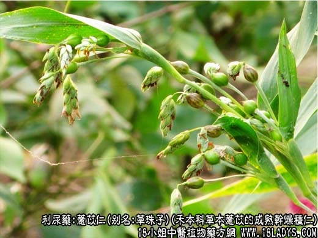
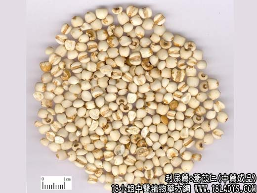
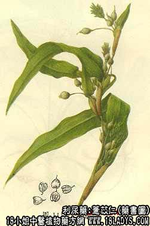

本品为常用中药。原名薏苡人《神农本草经》列为上品。
别名：薏米、薏仁米、草珠子。
来源：为禾本科一年生草本植物薏苡的成熟干燥种仁，多为栽培，亦有野生。
产地：过去主产福建莆城，莆田称“莆米仁”，河北安国，阜平称“祁薏米”；辽宁辽阳，庄河称“关米仁”，现全国各省均有栽培。
性状鉴别：种仁呈卵形—椭圆形，基部略平，顶端钝圆。表面乳白色。光滑。常有少量的淡棕色种皮残存，基部凹入，中央有点状种脐。侧面有腹沟，沟内淡棕色（有残留种皮）。依腹沟方向纵切可见胚乳较大，白色粉质，盾片狭长，淡黄色，油质，胚细长，位于腹沟一侧，上端为胚根，下端为胚芽。种仁横切肾形，质坚硬，味甘。以粒大、色白、完整，无碎粒，无粉屑杂质者为佳。
主要成分：含脂肪油、薏苡素、甾醇、氨基酸、维生素B1、薏苡仁脂。
功效与作用：能利水渗湿，有助于清热排脓和治肌肉风湿。关于后者，现代医学已证实，以薏仁油作用于蛙肌，确能使肌肉挛缩减少，这就为前人的经验“薏苡仁治湿痹拘挛”提供了初步的科学根据。本品又能健脾止泻，可能与其所含维生素B1有关。
炮制：生用或炒用。
性味：甘淡。
归经：入脾尾肺经。
功能：利湿清热，健脾补肺。
主治：水肿脚气，食少泻泄，湿痹拘挛，肺痈，肠痈。
临床应用：作为辅助药，用于利尿消炎，去湿止痛、健脾止泻。
1、用于治疗轻症水肿，尤为脚气水肿较适宜。慢性肾炎而水肿较轻者，可用薏苡仁和鱼腥草等利尿退肿，并可根据患者脾肾阳虚的情况酌加杜仲、菟丝子、黄芪等补益药，方如薏苡仁杜仲汤。
2、用于治疗内痈。例如治肺痈的苇茎汤，治肠痈的肠痈方，均用本品配合。
3、用于治疗湿热痹痛（录入风湿性肌炎、多发性神经炎），可缓解肌肉挛缩疼痛，无论热症寒症都可用，偏热的，配络石藤、稀签草；偏寒的，配麻黄，方如麻杏薏苡甘草汤；湿重的，再加配苍术，方如薏苡仁汤。
4、用于健脾止泻。薏苡仁的效力虽不及淮山药，但仍能进食欲，帮助消化，治脚气病和脾虚泄泻。在健脾方剂内也常采用，如参苓白术散。
此外，本品又可治皮肤扁平疣。可用50g，水煎服，或以100g煮粥，服用一个月作用，有一定效果。其治疗原理尚待研究。
用量：15~30g，大剂量可用到60~90g。
处方举例：1、薏苡杜仲汤：生薏苡仁24g，杜仲12g，土茯苓30g，菟丝子9g，金狗脊18g，黄芪30g，鱼腥草18g，四叶参30g，水煎服。
2、麻杏薏苡甘草汤（《金匮要略》）：麻黄4.5g，杏仁6g，生薏苡仁15g，甘草3g，水煎服。
3、薏苡仁汤（《张氏医通》）：生薏苡仁24g，苍术9g，麻黄6g，桂枝6g，当归9g，白芍9g，生姜9g，甘草3g，水煎服。
注：1、本品生用为主，炒用只用于健脾。2、本品效力较缓，故用量宜较大。3、据报道，实验研究发现薏苡内脂对癌细胞有抑制作用。临床上也曾试用薏苡仁配白花蛇舌草、全蝎、生甘草等治乳癌，但疗效尚有待进一步观察。又薏苡仁的丙酮提取物的抗肿瘤作用还不能肯定。